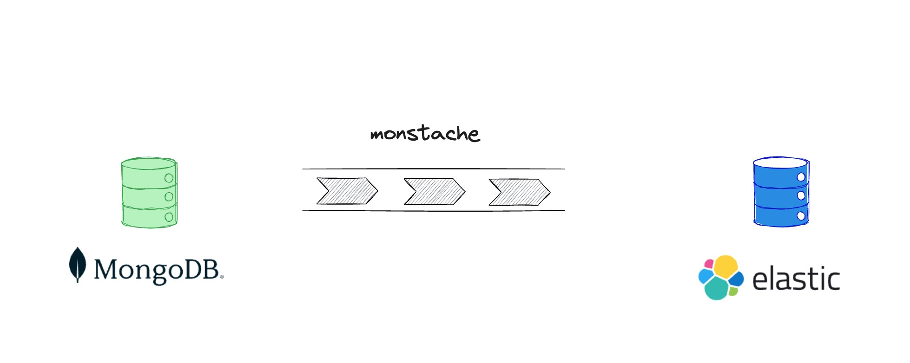

最近在做一个 mongoDB 的存储数据到 es 中进行检索的工作
当我们想实现检索 mongoDB 中的数据
使用工具到 es 有多种方式
-
monstache
Monstache基于MongoDB的oplog实现实时数据同步及订阅， ， ， 。 Monstache不仅支持软删除和硬删除<span class="bd-box"><h-char class="bd bd-beg"><h-inner>，</h-inner></h-char></span>还支持数据库删除和集合删除<span class="bd-box"><h-char class="bd bd-beg"><h-inner>，</h-inner></h-char></span>能够确保Elasticsearch端实时与源端数据保持一致<span class="bd-box"><h-char class="bd bd-beg"><h-inner>。</h-inner></h-char></span> -
flink cdc
支持数据的全量同步和增量同步， ， -
logstache
支持数据的全量同步或增量同步， 。
使用 cursor 对monstache 进行总结:
-
全量同步
- 可以在 config.toml 中配置
toml:"direct-read-namespaces"， - 将查询结果按批次处理并索引到 Elasticsearch
- 可以在 config.toml 中配置
-
增量同步
- 支持 oplog 和 change stream 两种增量同步方式
。
- 支持 oplog 和 change stream 两种增量同步方式
-
文档处理流程
mongoDB 文档经过以下处理后同步到 ES： - 筛选: 通过 filterWithRegex 等函数确定哪些文档需要处理
- 转换: 通过 JavaScript 脚本
、 - 关联: 处理关联的文档
- 索引: 最终将文档批量发送到 Elasticsearch
-
高可用/集群实现
- clusterName 配置: 同一集群的节点共享 ClusterName
- worker 配置: 同一集群不同worker 节点就是 clusterName + workerName
- leader election: 同一 worker 可以有多个备用节点
， - 状态管理: 共享最后同步的时间戳(lastTs)到 mongoDB 集合中
-
断点续传
- monstache 支持断点续传
， - 根据 ResumeStrategy 选择时间戳或 token 方式
- 将处理状态(lastTs或 token)存储在 mongoDB
，
- monstache 支持断点续传
-
监控服务器
- 提供 http 服务器用于监控和管理
- 健康检查
- 同步统计
- 实例信息
- 提供 http 服务器用于监控和管理
-
eventLoop 处理
- 处理各种事件和信号
-
回退处理
- 当 es 同步数据出错后
， ，
- 当 es 同步数据出错后
下面基于这几个模块进行分析
- 数据处理
- 管道处理以及优雅下线
- 回退处理
- 断点续传
- 插件管理
- 高可用处理
1. 数据处理
不管是 directNamespace 进行全量同步
func (ic *indexClient) eventLoop() {
...
for {
select {
...
// 监听到有数据过来
case op, open := <-ic.gtmCtx.OpC:
if !ic.enabled {
break
}
if op == nil {
if !open && !allOpsVisited {
allOpsVisited = true
ic.opsConsumed <- true
}
break
}
// 判断是不是增量变更
if op.IsSourceOplog() {
// 每次增量变更<span class="bd-box"><h-char class="bd bd-beg"><h-inner>，</h-inner></h-char></span>都会保存赋值最新处理的时间戳
ic.lastTs = op.Timestamp
if ic.config.ResumeStrategy == tokenResumeStrategy {
ic.tokens[op.ResumeToken.StreamID] = op.ResumeToken.ResumeToken
}
}
// 根据更新的类型<span class="bd-box"><h-char class="bd bd-beg"><h-inner>，</h-inner></h-char></span>进行不同的 route 来处理
if err = ic.routeOp(op); err != nil {
ic.processErr(err)
}
}
}
}
func (ic *indexClient) routeOp(op *gtm.Op) (err error) {
if processPlugin != nil {
// 插件处理数据
err = ic.routeProcess(op)
}
if op.IsDrop() {
err = ic.routeDrop(op)
} else if op.IsDelete() {
err = ic.routeDelete(op)
} else if op.Data != nil {
err = ic.routeData(op)
}
return
}
func (ic *indexClient) routeData(op *gtm.Op) (err error) {
skip := false
if op.IsSourceOplog() && len(ic.config.Relate) > 0 {
skip, err = ic.routeDataRelate(op)
}
if !skip {
if ic.hasFileContent(op) {
ic.fileC <- op
} else {
ic.indexC <- op
}
}
return
}
func (ic *indexClient) startIndex() {
for i := 0; i < 5; i++ {
ic.indexWg.Add(1)
go func() {
// 这里会开 5 个线程进行处理
defer ic.indexWg.Done()
for op := range ic.indexC {
if err := ic.doIndex(op); err != nil {
ic.processErr(err)
}
}
}()
}
}
2. 管道以及处理生命周期
这里涉及多管道数据处理

这里重点说明一下优雅关闭下的各管道处理流程
- 设置了全量读取完成后
，
func (ic *indexClient) startReadWait() {
directReadsEnabled := len(ic.config.DirectReadNs) > 0
if directReadsEnabled {
exitAfterDirectReads := ic.config.ExitAfterDirectReads
go func() {
ic.gtmCtx.DirectReadWg.Wait()
if ic.config.Resume {
ic.saveTimestampFromReplStatus()
}
if exitAfterDirectReads {
var exit bool
ic.rwmutex.RLock()
exit = !ic.externalShutdown
ic.rwmutex.RUnlock()
if exit {
// 先等待所有 worker 处理<span class="bd-box"><h-char class="bd bd-beg"><h-inner>，</h-inner></h-char></span>在关闭客户端和服务端
ic.stopAllWorkers()
ic.doneC <- 30
}
}
}()
}
}
- monstache 会在最开始的时候
， ， ，
func (sh *sigHandler) start() {
go func() {
sigs := make(chan os.Signal, 1)
signal.Notify(sigs, syscall.SIGINT, syscall.SIGTERM, syscall.SIGKILL)
select {
case <-sigs:
// 当客户端还未开始<span class="bd-box"><h-char class="bd bd-beg"><h-inner>，</h-inner></h-char></span>则直接退出
// we never got started so simply exit
os.Exit(0)
case ic := <-sh.clientStartedC:
// 当客户端已经开始<span class="bd-box"><h-char class="bd bd-beg"><h-inner>，</h-inner></h-char></span>则需要等待处理完成数据后<span class="bd-box"><h-char class="bd bd-beg"><h-inner>，</h-inner></h-char></span>优雅退出
<-sigs
ic.onExternalShutdown()
go func() {
// forced shutdown on 2nd signal
<-sigs
infoLog.Println("Forcing shutdown, bye bye...")
os.Exit(1)
}()
// we started processing events so do a clean shutdown
infoLog.Println("Starting clean shutdown")
ic.stopAllWorkers()
ic.doneC <- 10
}
}()
}
onExternalShutdown处理的是当意外退出后
func (ic *indexClient) onExternalShutdown() {
ic.rwmutex.Lock()
defer ic.rwmutex.Unlock()
ic.externalShutdown = true
ic.checkDirectReads()
}
func (ic *indexClient) checkDirectReads() {
if len(ic.config.DirectReadNs) == 0 {
return
}
drc := ic.directReadChan()
t := time.NewTimer(time.Duration(500) * time.Millisecond)
defer t.Stop()
select {
case <-t.C:
ic.directReadsPending = true
case <-drc:
}
}
func (ic *indexClient) directReadChan() chan struct{} {
c := make(chan struct{})
go func() {
ic.gtmCtx.DirectReadWg.Wait()
close(c)
}()
return c
}
stopAllWorkers 做的事情就是:
- 先停止监听数据变化
- 直到没有数据会过来后
，
func (ic *indexClient) stopAllWorkers() {
infoLog.Println("Stopping all workers")
ic.gtmCtx.Stop()
<-ic.opsConsumed
close(ic.relateC)
ic.relateWg.Wait()
close(ic.fileC)
ic.fileWg.Wait()
close(ic.indexC)
ic.indexWg.Wait()
close(ic.processC)
ic.processWg.Wait()
}
doneC 就是一个监听开始关闭客户端的信道
// main 的 eventLoop 会监听 doneC
func (ic *indexClient) eventLoop() {
...
for {
select {
...
case timeout := <-ic.doneC:
ic.enabled = false
ic.shutdown(timeout)
return
}
}
}
func (ic *indexClient) shutdown(timeout int) {
infoLog.Println("Shutting down")
// 关闭客户端
go ic.closeClient()
doneC := make(chan bool)
go func() {
closeT := time.NewTimer(time.Duration(timeout) * time.Second)
defer closeT.Stop()
done := false
for !done {
select {
case <-ic.closeC:
done = true
close(doneC)
// 超时直接关闭
case <-closeT.C:
done = true
close(doneC)
}
}
}()
<-doneC
os.Exit(exitStatus)
}
func (ic *indexClient) closeClient() {
if ic.mongo != nil && ic.config.ClusterName != "" {
ic.resetClusterState()
}
// 关闭 开启的服务端状态响应
if ic.hsc != nil {
ic.hsc.shutdown = true
ic.hsc.httpServer.Shutdown(context.Background())
}
// 关闭 es 客户端
if ic.bulk != nil {
ic.bulk.Close()
}
// 关闭 es 状态统计 客户端
if ic.bulkStats != nil {
ic.bulkStats.Close()
}
// 如果全量写入完成<span class="bd-box"><h-char class="bd bd-beg"><h-inner>，</h-inner></h-char></span>则会根据是否开启全量写入状态<span class="bd-box"><h-char class="bd bd-beg"><h-inner>，</h-inner></h-char></span>来保存写入状态
if len(ic.config.DirectReadNs) > 0 {
ic.rwmutex.RLock()
if !ic.directReadsPending {
infoLog.Println("Direct reads completed")
if ic.config.DirectReadStateful {
if err := ic.saveDirectReadNamespaces(); err != nil {
errorLog.Printf("Error saving direct read state: %s", err)
}
}
}
ic.rwmutex.RUnlock()
}
close(ic.closeC)
}
3. 回退处理
es bulk server 设置 backoff 函数
func (ic *indexClient) newBulkProcessor(client *elastic.Client) (bulk *elastic.BulkProcessor, err error) {
config := ic.config
bulkService := client.BulkProcessor().Name("monstache")
bulkService.Workers(config.ElasticMaxConns) //初始化elastic 连接数
bulkService.Stats(config.Stats) // 开启统计
bulkService.BulkActions(config.ElasticMaxDocs) //批量 flush 进 elastic 的数量
bulkService.BulkSize(config.ElasticMaxBytes) // 批量 flush 进 elastic 的最大 size
if config.ElasticRetry == false {
bulkService.Backoff(&elastic.StopBackoff{})
}
bulkService.After(ic.afterBulk()) // 回退处理<span class="bd-box"><h-char class="bd bd-beg"><h-inner>，</h-inner></h-char></span>其实也是熔断处理
// 设置 flush 的间隔
bulkService.FlushInterval(time.Duration(config.ElasticMaxSeconds) * time.Second)
return bulkService.Do(context.Background())
}
func (ic *indexClient) afterBulk() func(int64, []elastic.BulkableRequest, *elastic.BulkResponse, error) {
return func(executionID int64, requests []elastic.BulkableRequest, response *elastic.BulkResponse, err error) {
if response == nil || !response.Errors {
ic.bulkErrs.Store(0)
return
}
if failed := response.Failed(); failed != nil {
backoff := false
for _, item := range failed {
if item.Status == http.StatusConflict {
// ignore version conflict since this simply means the doc
// is already in the index
continue
}
logFailedResponseItem(item)
if item.Status == http.StatusNotFound {
// status not found should not initiate back off
continue
}
backoff = true
}
// 主要是在这里<span class="bd-box"><h-char class="bd bd-beg"><h-inner>，</h-inner></h-char></span>会给 bulkBackoffC 管道 传递信号<span class="bd-box"><h-char class="bd bd-beg"><h-inner>，</h-inner></h-char></span>告诉主进程需要等待一段时间<span class="bd-box"><h-char class="bd bd-beg"><h-inner>，</h-inner></h-char></span>再处理
if backoff {
wait := ic.backoffDuration()
infoLog.Printf("Backing off for %.1f minutes after bulk indexing failures.", wait.Minutes())
// signal the event loop to pause pulling new events for a duration
ic.bulkBackoffC <- wait
// pause the bulk worker for a duration
ic.backoff(wait)
ic.bulkErrs.Add(1)
}
}
}
}
主进程 eventLoop 中会监听这个 bulkBackoffC
func (ic *indexClient) backoffDuration() time.Duration {
consecutiveErrors := int(ic.bulkErrs.Load())
wait, ok := ic.bulkBackoff.Next(consecutiveErrors)
if !ok {
wait = ic.bulkBackoffMax
}
return wait
}
func (ic *indexClient) backoff(wait time.Duration) {
timer := time.NewTimer(wait)
defer timer.Stop()
sigs := make(chan os.Signal, 1)
signal.Notify(sigs, syscall.SIGINT, syscall.SIGTERM)
defer signal.Stop(sigs)
for {
select {
case <-timer.C:
return
case <-sigs:
return
case req := <-ic.statusReqC:
enabled, lastTs := ic.enabled, ic.lastTs
statusResp := &statusResponse{
enabled: enabled,
lastTs: lastTs,
backoff: true,
}
req.responseC <- statusResp
}
}
}
func (ic *indexClient) eventLoop() {
...
for {
select {
case wait := <-ic.bulkBackoffC:
ic.backoff(wait)
}
}
}
4. 断点续传
保存时间戳的核心函数: saveTimestamp() , 每次保存最新的时间戳到ConfigDatabaseName = cluster + worker
func (ic *indexClient) saveTimestamp() error {
col := ic.mongoWriter.Database(ic.config.ConfigDatabaseName).Collection("monstache")
doc := map[string]interface{}{
"ts": ic.lastTs,
}
opts := options.Update()
opts.SetUpsert(true)
_, err := col.UpdateOne(context.Background(), bson.M{
"_id": ic.config.ResumeName,
}, bson.M{
"$set": doc,
}, opts)
return err
}
时间戳更新机制: 每隔 10s 执行一次
func (ic *indexClient) eventLoop() {
timestampTicker := time.NewTicker(10 * time.Second)
if !ic.config.Resume {
timestampTicker.Stop()
}
for {
select {
case <-timestampTicker.C:
if !ic.enabled {
break
}
if ic.config.ResumeStrategy == tokenResumeStrategy {
ic.nextTokens()
} else {
ic.nextTimestamp()
}
}
}
}
主要解释时间戳机制: nextTimestamp()
func (ic *indexClient) nextTimestamp() {
if ic.hasNewEvents() {
ic.bulk.Flush()
if err := ic.saveTimestamp(); err == nil {
ic.lastTsSaved = ic.lastTs
} else {
ic.processErr(err)
}
}
}
// 只保存时间最新的时间<span class="bd-box"><h-char class="bd bd-beg"><h-inner>，</h-inner></h-char></span>同时把数据 flush 进 es
func (ic *indexClient) hasNewEvents() bool {
if ic.lastTs.T > ic.lastTsSaved.T ||
(ic.lastTs.T == ic.lastTsSaved.T && ic.lastTs.I > ic.lastTsSaved.I) {
return true
}
return false
}
在优雅关闭时
func (ic *indexClient) shutdown(timeout int) {
// ...
if ic.config.Resume {
if ic.config.ResumeStrategy == tokenResumeStrategy {
if err := ic.saveTokens(); err != nil {
errorLog.Printf("Unable to save tokens: %s", err)
}
} else {
if err := ic.saveTimestamp(); err != nil {
errorLog.Printf("Unable to save timestamp: %s", err)
}
}
}
// ...
}
什么时候获取lastTs 呢
func (ic *indexClient) eventLoop() {
...
for {
select {
...
// 监听到有数据过来
case op, open := <-ic.gtmCtx.OpC:
if !ic.enabled {
break
}
if op == nil {
if !open && !allOpsVisited {
allOpsVisited = true
ic.opsConsumed <- true
}
break
}
// 判断是不是增量变更
if op.IsSourceOplog() {
// 每次增量变更<span class="bd-box"><h-char class="bd bd-beg"><h-inner>，</h-inner></h-char></span>都会保存赋值最新处理的时间戳
ic.lastTs = op.Timestamp
if ic.config.ResumeStrategy == tokenResumeStrategy {
ic.tokens[op.ResumeToken.StreamID] = op.ResumeToken.ResumeToken
}
}
// 根据更新的类型<span class="bd-box"><h-char class="bd bd-beg"><h-inner>，</h-inner></h-char></span>进行不同的 route 来处理
if err = ic.routeOp(op); err != nil {
ic.processErr(err)
}
}
}
}
如果是全量同步时
func (ic *indexClient) startReadWait() {
directReadsEnabled := len(ic.config.DirectReadNs) > 0
if directReadsEnabled {
exitAfterDirectReads := ic.config.ExitAfterDirectReads
go func() {
ic.gtmCtx.DirectReadWg.Wait()
// 完成全量同步后<span class="bd-box"><h-char class="bd bd-beg"><h-inner>，</h-inner></h-char></span>保存副本集最小时间戳
if ic.config.Resume {
ic.saveTimestampFromReplStatus()
}
if exitAfterDirectReads {
var exit bool
ic.rwmutex.RLock()
exit = !ic.externalShutdown
ic.rwmutex.RUnlock()
if exit {
ic.stopAllWorkers()
ic.doneC <- 30
}
}
}()
}
}
func (ic *indexClient) saveTimestampFromReplStatus() {
if rs, err := gtm.GetReplStatus(ic.mongo); err == nil {
if ic.lastTs, err = rs.GetLastCommitted(); err == nil {
if err = ic.saveTimestamp(); err != nil {
ic.processErr(err)
}
} else {
ic.processErr(err)
}
} else {
ic.saveTimestampFromServerStatus()
}
}
启动时
func (ic *indexClient) buildTimestampGen() gtm.TimestampGenerator {
var after gtm.TimestampGenerator
config := ic.config
if config.ResumeStrategy != timestampResumeStrategy {
return after
}
...
else if config.Resume {
after = func(client *mongo.Client, options *gtm.Options) (primitive.Timestamp, error) {
var candidateTs primitive.Timestamp
var tsSource string
var err error
col := client.Database(config.ConfigDatabaseName).Collection("monstache")
result := col.FindOne(context.Background(), bson.M{
"_id": config.ResumeName,
})
if err = result.Err(); err == nil {
doc := make(map[string]interface{})
if err = result.Decode(&doc); err == nil {
if doc["ts"] != nil {
candidateTs = doc["ts"].(primitive.Timestamp)
candidateTs.I++
tsSource = oplog.TS_SOURCE_MONSTACHE
}
}
}
// 如果从 configDBName 中没有获取到时间戳<span class="bd-box"><h-char class="bd bd-beg"><h-inner>，</h-inner></h-char></span>就取mongo 中最新的时间戳
if candidateTs.T == 0 {
candidateTs, _ = gtm.LastOpTimestamp(client, options)
tsSource = oplog.TS_SOURCE_OPLOG
}
ts := <-ic.oplogTsResolver.GetResumeTimestamp(candidateTs, tsSource)
infoLog.Printf("Resuming from timestamp %+v", ts)
return ts, nil
}
}
return after
}
startListen 后
func (ic *indexClient) startListen() {
config := ic.config
conns := ic.buildConnections()
if config.ResumeStrategy == timestampResumeStrategy {
// 从最早副本集的记录的时间戳开始恢复
if config.ResumeFromEarliestTimestamp {
ic.oplogTsResolver = oplog.NewTimestampResolverEarliest(len(conns), infoLog)
} else {
ic.oplogTsResolver = oplog.TimestampResolverSimple{}
}
}
gtmOpts := ic.buildGtmOptions()
ic.gtmCtx = gtm.StartMulti(conns, gtmOpts)
if config.readShards() && !config.DisableChangeEvents {
ic.gtmCtx.AddShardListener(ic.mongoConfig, gtmOpts, config.makeShardInsertHandler())
}
}
下面的时间戳处理器
func (resolver *TimestampResolverEarliest) GetResumeTimestamp(candidateTs primitive.Timestamp, source string) chan primitive.Timestamp {
resolver.m.Lock()
defer resolver.m.Unlock()
if resolver.connectionsQueried >= resolver.connectionsTotal {
// in this case, an earliest timestamp is already calculated,
// so it is just returned in a temporary channel
resolver.logger.Printf(
"Earliest oplog resume timestamp is already calculated: %s",
tsToString(resolver.earliestTs),
)
tmpResultChan := make(chan primitive.Timestamp, 1)
tmpResultChan <- resolver.earliestTs
return tmpResultChan
}
resolver.connectionsQueried++
resolver.updateEarliestTs(source, candidateTs)
// if this function has been called for every mongodb connection,
// then a final earliest resume timestamp can be returned to every caller
if resolver.connectionsQueried == resolver.connectionsTotal {
resolver.logger.Printf(
"Earliest oplog resume timestamp calculated: %s, source: %s",
tsToString(resolver.earliestTs),
resolver.earliestTsSource,
)
for i := 0; i < resolver.connectionsTotal; i++ {
resolver.resultChan <- resolver.earliestTs
}
}
return resolver.resultChan
}
- monstache 保存的时间戳 > oplog 最新时间戳
- buildConnections 处理监听比如分片集群的connection
， - 处理恢复时间戳的策略
- NewTimestampResolverEarliest 处理基于副本集最早时间戳开始恢复
- TimestampResolverSimple 从记录的时间戳后面开始恢复
- buildGtmOptions
- 配置各种 filter chain
， - 开始同步数据的时间戳生成器
- ResumeFromTimestamp 基于给定的时间戳开始同步
- Resume 为 true
， - 基于时间戳策略
， ，
- 基于时间戳策略
- Replay 则是从 mongo 记录的 oplog 的时间戳开始同步
- 配置各种 filter chain
- StartMulti 开启多个 client 的监听
- 如果配置了分片
，
5. 插件管理
monstache 支持使用自定义的插件
各插件的作用
- Pipeline: 作用于数据源端
（ ） ， ， - Map: 作用于单个文档上
， 、 - Filter: 决定是否处理某个文档
， - Process: 对clone 的文档做处理
在有数据更新时
func (ic *indexClient) routeOp(op *gtm.Op) (err error) {
// 如果设置了 processPlugin
if processPlugin != nil {
err = ic.routeProcess(op)
}
if op.IsDrop() {
err = ic.routeDrop(op)
} else if op.IsDelete() {
err = ic.routeDelete(op)
} else if op.Data != nil {
err = ic.routeData(op)
}
return
}
在 routeData 中
func (ic *indexClient) routeData(op *gtm.Op) (err error) {
skip := false
if op.IsSourceOplog() && len(ic.config.Relate) > 0 {
skip, err = ic.routeDataRelate(op)
}
if !skip {
if ic.hasFileContent(op) {
ic.fileC <- op
} else {
ic.indexC <- op
}
}
return
}
// 在 indexC 有数据后<span class="bd-box"><h-char class="bd bd-beg"><h-inner>，</h-inner></h-char></span>就会执行doIndex
func (ic *indexClient) doIndex(op *gtm.Op) (err error) {
if err = ic.mapData(op); err == nil {
if op.Data != nil {
err = ic.doIndexing(op)
} else if op.IsUpdate() {
ic.doDelete(op)
}
}
return
}
func (ic *indexClient) mapData(op *gtm.Op) error {
if mapperPlugin != nil {
return ic.mapDataGolang(op)
}
return ic.mapDataJavascript(op)
}
func (ic *indexClient) mapDataGolang(op *gtm.Op) error {
input := &monstachemap.MapperPluginInput{
Document: op.Data,
Namespace: op.Namespace,
Database: op.GetDatabase(),
Collection: op.GetCollection(),
Operation: op.Operation,
MongoClient: ic.mongo,
UpdateDescription: op.UpdateDescription,
}
// 这里会执行 mapperPlugin
output, err := mapperPlugin(input)
if err != nil {
return err
}
if output == nil {
return nil
}
if output.Drop {
op.Data = nil
} else {
if output.Skip {
op.Data = map[string]interface{}{}
} else if !output.Passthrough {
if output.Document == nil {
return errors.New("Map function must return a non-nil document")
}
op.Data = output.Document
}
meta := make(map[string]interface{})
if output.Skip {
meta["skip"] = true
}
if output.Index != "" {
meta["index"] = output.Index
}
if output.ID != "" {
meta["id"] = output.ID
}
if output.Type != "" {
meta["type"] = output.Type
}
if output.Routing != "" {
meta["routing"] = output.Routing
}
if output.Parent != "" {
meta["parent"] = output.Parent
}
if output.Version != 0 {
meta["version"] = output.Version
}
if output.VersionType != "" {
meta["versionType"] = output.VersionType
}
if output.Pipeline != "" {
meta["pipeline"] = output.Pipeline
}
if output.RetryOnConflict != 0 {
meta["retryOnConflict"] = output.RetryOnConflict
}
if len(meta) > 0 {
op.Data["_meta_monstache"] = meta
}
}
return nil
}
filter plugin 会在开始的时候
func (ic *indexClient) buildGtmOptions() *gtm.Options {
var nsFilter, filter, directReadFilter gtm.OpFilter
config := ic.config
filterChain := ic.buildFilterChain()
filterArray := ic.buildFilterArray()
nsFilter = gtm.ChainOpFilters(filterChain...)
filter = gtm.ChainOpFilters(filterArray...)
directReadFilter = gtm.ChainOpFilters(filterArray...)
}
func (ic *indexClient) buildFilterArray() []gtm.OpFilter {
config := ic.config
filterArray := []gtm.OpFilter{}
var pluginFilter gtm.OpFilter
if config.Worker != "" {
workerFilter, err := consistent.ConsistentHashFilter(config.Worker, config.Workers)
if err != nil {
errorLog.Fatalln(err)
}
filterArray = append(filterArray, workerFilter)
} else if config.Workers != nil {
errorLog.Fatalln("Workers configured but this worker is undefined. worker must be set to one of the workers.")
}
if filterPlugin != nil {
// 设置 filter plugin
pluginFilter = filterWithPlugin(ic.mongo)
filterArray = append(filterArray, pluginFilter)
} else if len(filterEnvs) > 0 {
pluginFilter = filterWithScript()
filterArray = append(filterArray, pluginFilter)
}
if pluginFilter != nil {
ic.filter = pluginFilter
}
return filterArray
}
6. 高可用处理
可以在启动时
在 buildFilterArray 的时候
func (ic *indexClient) buildFilterArray() []gtm.OpFilter {
config := ic.config
filterArray := []gtm.OpFilter{}
var pluginFilter gtm.OpFilter
if config.Worker != "" {
// opLog 经过hash 函数处理后<span class="bd-box"><h-char class="bd bd-beg"><h-inner>，</h-inner></h-char></span>只会被路由到某一个 worker
workerFilter, err := consistent.ConsistentHashFilter(config.Worker, config.Workers)
if err != nil {
errorLog.Fatalln(err)
}
filterArray = append(filterArray, workerFilter)
} else if config.Workers != nil {
errorLog.Fatalln("Workers configured but this worker is undefined. worker must be set to one of the workers.")
}
if filterPlugin != nil {
// 设置 filter plugin
pluginFilter = filterWithPlugin(ic.mongo)
filterArray = append(filterArray, pluginFilter)
} else if len(filterEnvs) > 0 {
pluginFilter = filterWithScript()
filterArray = append(filterArray, pluginFilter)
}
if pluginFilter != nil {
ic.filter = pluginFilter
}
return filterArray
}
最后在赋一张 cursor 生成的全流程图的描述: